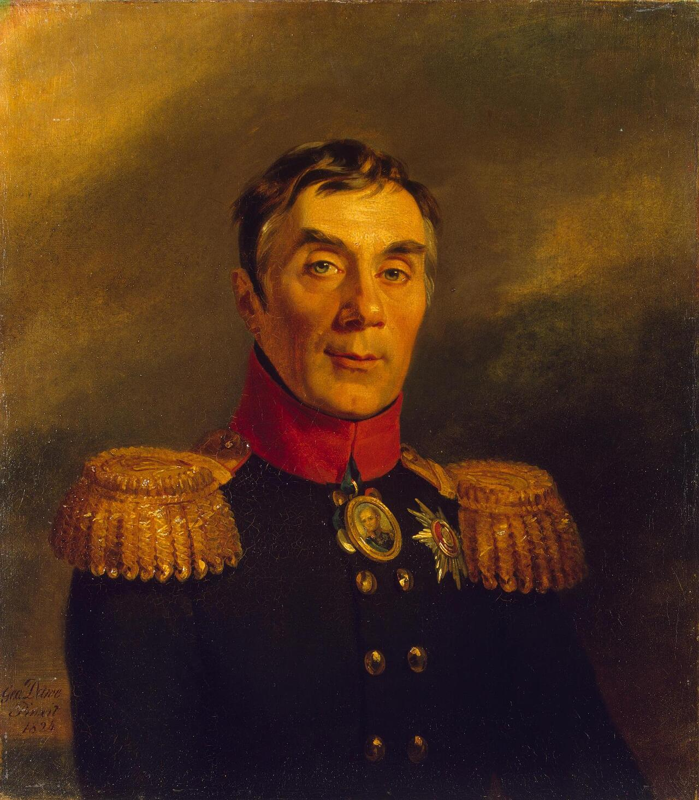
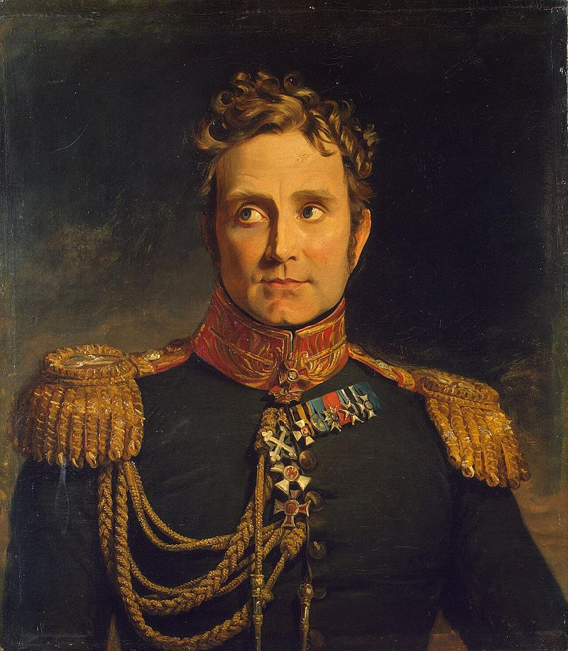
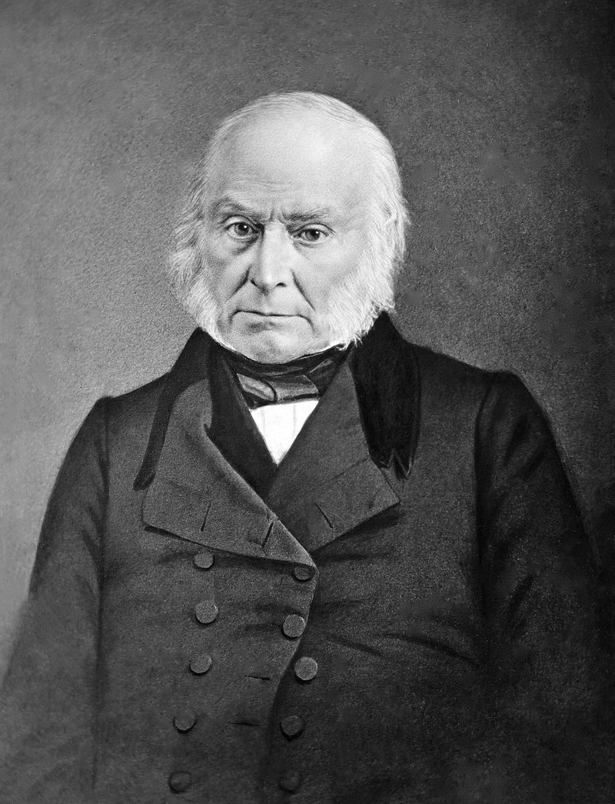
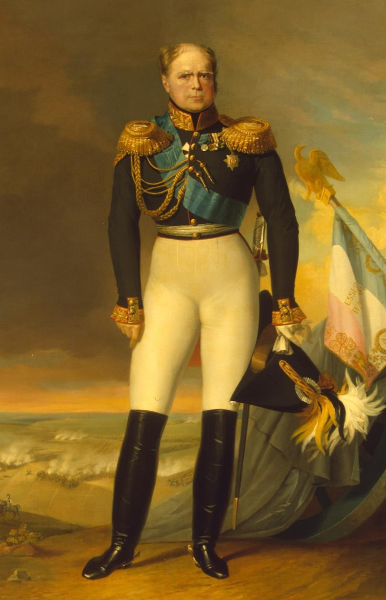
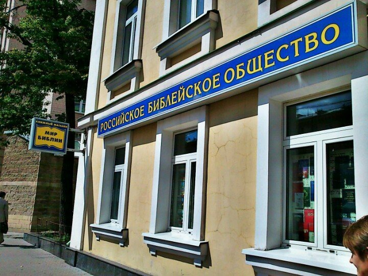

편지와 성경 - 짜르는 대체 뭘 하고 있었나
게시: 2021-02-01T06:30:51+09:00
시간을 좀 거슬러 올라가보지요. 쿠투조프가 마치 모스크바를 사수하려는 것처럼 쇼를 하느라 모스크바 외곽에서 병사들에게 삽질을 시키고 있던 9월 11일, 저 멀리 알렉산드르의 궁전이 있는 상트 페체르부르그에서는 시내 모든 성당의 종과 포병대의 축포가 울렸고 온갖 건물들에 있는 대로 조명을 밝히는 등 축제 분위기가 연출되고 있었습니다. 보로디노 전투가 끝난 날 새벽, 쿠투조프가 '보로디노에서 나폴레옹을 무찔렀다'라고 주장한 보고서가 알렉산드르에게 도달했기 때문이었습니다. 상트 페체르부르그 전체가 난리가 나서 위대한 러시아의 승리를 자축했습니다. 크게 기뻐한 알렉산드르는 이 승리에 숟가락을 얹고자, 자신이 고안한 '나폴레옹을 꺾을 추가 작전안'을 담은 편지를 체르니셰프(Chernyshev) 대령에게 들려 쿠투조프에게 보냈습니다. 이틀 동안 열광적으로 진행된 이 축하 소동이 끝난 뒤, 9월 18일 이번에는 모스크바 북동쪽 250km 지점 야로슬라플(Yaroslavl)에 있던 짜르의 여동생 예카테리나로부터 매우 급히 쓴 것이 분명한 짧은 편지가 날아들었습니다. 내용은 이랬습니다. "모스크바가 함락되었어요. 이해할 수 없는 일이 있네요. 절대 결심을 잊지 마세요. 평화 조약은 안됩니다. 아직 명예를 회복할 희망은 있어요." 이게 알렉산드르가 진실을 알게된 첫 순간이었습니다. 그는 당장 쿠투조프에게 편지를 보내 모스크바 함락 소식을 남을 통해 듣게 한 것에 대한 분노를 터뜨렸습니다. 그러나 알렉산드르가 쿠투조프에게 할 수 있는 것은 아무 것도 없었습니다. 지금은 국가의 운명이 풍전등화의 위기에 처한 비상 사태였고 무엇보다 쿠투조프가 전체 러시아 야전군의 지휘권을 가지고 있었으니까요. 알렉산드르가 할 수 있는 것은 '내가 애초에 쿠투조프 따위에게 지휘권을 맡겨서는 안된다고 했지 않나!' 라며 애꿎은 아락체예프에게 화풀이를 하는 것 뿐이었습니다.

(전직 국방부 장관이자 당시 국무회의 의원이었던 아락체예프(Alexey Andreyevich Arakcheyev)입니다. 그는 짜르의 명령을 글자 그대로 충실히 수행하는 충신이었습니다.) 쿠투조프로부터 정식으로 모스크바를 버리고 후퇴했다는 보고가 날아온 것은 그로부터 이틀이나 지난 뒤였습니다. 다소 장황했던 먼저번 승전 보고서와는 달리 무척 짧고 보고서를 들고온 사람은 당시 대령이던 미쇼(Alexandre Michaud de Beauretour)였습니다. 보통 메시지가 마음에 안 들면 그 메신저가 곤욕을 치르기 마련인데, 알렉산드르는 이때 즈음엔 많이 진정이 되었는지 미쇼 대령에게 이렇게 말했다고 합니다. "정말 불행한 일이야. 슬픈 소식을 가지고 왔군, 대령. 보아 하니 신의 섭리는 우리들, 특히 나로부터 많은 희생을 요구하는 것 같네. 난 그 운명에 따를 준비가 되어있네."

(미쇼(Alexandre Michaud, 러시아식으로는 Alexandr Francevich Misho)는 나폴레옹보다 2살 어린 사람으로서, 원래 피에몬테 왕국 출신의 이탈리아인인데 주로 러시아군에서 활약했습니다.) 미쇼 대령은 쿠투조프가 지시한 뻔한 변명 외에, 예카테리나와 입을 맞춘 것처럼 같은 메시지를 전달했습니다. 현재 러시아 야전군이 유일하게 두려워하는 것은 이 불운한 전황에 실망한 짜르가 혹시라도 나폴레옹과 강화 조약을 맺지나 않을까 한다는 것이었습니다. 알렉산드르는 그에 대해 러시아 병사들이 최후의 한명까지 다 쓰러진다고 해도 자신이 직접 모든 귀족들과 농민들을 이끌고 나폴레옹과 맞서 싸우겠다고 답했습니다. 그리고 그의 대답은 어느 정도 진실된 것이었습니다. 알렉산드르는 자신의 제국이 무너지고 있는 이 상황 속에서도 꽤 침착했습니다. 그가 믿는 구석은 무엇이었을까요? 일단 상트 페체르부르그의 여론은 결코 그에게 유리하지 않았습니다. 자신들이 속았음을 안 시민들은 곧 누군가 탓할 희생양을 찾았는데, 1순위는 당연히 전쟁 초기 계속 후퇴만 했던 빌어먹을 독일인 바클레이였고, 2순위는 이제 보니 허풍쟁이에 불과한 쿠투조프였지만, 3순위 후보에 오른 사람은 다름아닌 알렉산드르 본인이었습니다. 애초에 알렉산드르는 제2차 대불동맹전쟁 때까지는 나폴레옹에 대해 호의적이었고, 1807년의 틸지트 회담에서 나폴레옹에게 홀려 친불 정책을 쓰며 대륙봉쇄령에 가담했기 때문에 귀족들과 농노들의 원성을 산 바 있었습니다. 결국 이런 패배와 모스크바 함락이라는 재앙적 결과를 얻게 되자, 일반 시민들조차 짜르를 이렇게 좋지 않은 시선으로 쳐다보게 되었고, 덕분에 그의 정치적 입지는 매우 좁았습니다. 상트 페체르부르그의 살롱 분위기는 결국 나폴레옹과의 강화 조약이 불가피하다는 것이었습니다. 당시 상트 페체르부르그에는 훗날 미국의 제6대 대통령이 되는 존 퀸시 아담스(John Quincy Adams)가 미국 대사로 와있었는데, 그는 이때 즈음해서 시내의 영국인들이 떠나기 위해 이삿짐을 챙기는 모습을 목격했다고 합니다.

(1840년대의 존 퀸시 아담스입니다. 그는 나폴레옹보다 2살 많은 사람이었는데, 말년에 이렇게 사진까지 남기네요. 나폴레옹도 조금만 더 오래 살았다면 사진을 남겼을 것 같습니다.) 지방의 귀족들도 딱히 애국심이 대단하다던가 짜르에 대한 충심이 각별하지는 않았습니다. 톨스토이의 '전쟁과 평화'에 나오는 일화처럼, 일부 열혈 귀족 젊은이들과 어린이들이 집에서 도망쳐나와 군에 입대하기도 했지만 정작 대부분의 귀족 가장들은 짜르의 호소에 대해 지갑과 농장을 굳게 닫았습니다. 짜르는 추가 병력을 모집하기 위해 농장마다 일정 비율의 농노들을 보내도록 지시했는데, 어떻게 보면 당연한 이야기지만 귀족들은 젊고 건강하고 똑똑한 농노들 대신 늙고 약하고 멍청한 농노들만 골라서 보냈습니다. 그나마 그런 농노라도 뽑아 보낸 이들은 양심적인 귀족들이었고, 많은 귀족들이 그냥 어떤 결과로든 전쟁이 빨리 끝나버리기를 바라며 농노 내놓는 것을 마냥 미루었습니다. 그 결과, 쿠투조프가 주둔한 칼루가(Kaluga) 지역에서는 원래 20,843명의 신규 병력이 징집되어야 했는데 실제로 징집된 것은 15,370명에 불과했고, 그 중 3분의 1 정도는 도저히 병정 노릇을 할 수 없는 상태의 농노들이었습니다. 쿠투조프의 야전군이야말로 알렉산드르가 믿고 의지할 존재였는데, 실제로는 가장 큰 실망을 줄 뿐이었습니다. 보급이 원활한 남부의 칼루가(Kaluga) 쪽으로 일단 후퇴했던 러시아 야전군은 아무래도 패퇴하는 군대이다보니 사기가 떨어져 탈영과 약탈이 자주 일어났습니다. 독투로프 장군이 자신의 부인에게 쓴 편지나 볼콘스키 대공이 남긴 기록 등을 보면 이때 러시아군의 기강이 무너져내려 러시아 농민들을 러시아군이 약탈하고 살해하는 일이 자주 일어났다고 한탄하고 있습니다. 장교들은 러시아 군복이 창피하다는 이야기를 공공연하게 떠들고 다녔습니다. 장군들끼리도 패전과 후퇴에 대한 책임을 서로 남 탓으로 돌리려고 하면서 갈등이 심했습니다. 쿠투조프나 바클레이는 물론 고참 장군인 베니히센이나 모스크바 주지사였던 로스톱친 등 야전군에 있던 주요 장군들은 직접 짜르에게 편지를 보내 다른 장군들의 사소한 잘못이나 근거없는 소문을 시시콜콜 짜르에게 고자질했습니다. 이런 중대한 국가적 위기 속에서 '쿠투조프가 여성 2명에게 코작 기병 군복을 입혀 막사에 들였습니다' 따위의 너절한 고발 편지를 읽어야 했던 알렉산드르는 아마 미치고 환장할 지경이었을 것입니다. 이 어려운 시절에 그나마 알렉산드르의 편을 들어 정말 열의를 가지고 프랑스군과의 싸움에 힘을 보탠 것은 상인 계층이었습니다. 이들의 열의도 애국심보다는 금전적 이윤 때문이었습니다. 나폴레옹과의 강화 조약은 곧 러시아가 다시 대륙봉쇄령에 들어가게 된다는 것이었고, 지난 몇 년 동안 바로 그 대륙봉쇄령 떄문에 이들이 입었던 금전적 피해가 매우 컸기 때문이었습니다. 그러나 이들도 싸움보다는 주로 이윤을 취하기에 급급했습니다. 상인 계층은 군납 활동을 하며 병참 장교들과 짜고 가격을 담합하여 올리고 온갖 납품 비리를 일으켰습니다. 가령 모스크바 함락 직전, 모스크바의 무기상인들은 기병용 군도 가격을 6루블에서 30~40루블로, 6루블 하던 피스톨 한쌍 가격을 35~50루블로 올렸고, 무엇보다 중요한 무기이자 11루블하던 머스켓 소총 가격을 15루블부터 최대 80루블까지 올렸습니다. 그야말로 폭리였습니다. 그러나 상인들만 욕할 일이 아니었습니다. 짜르의 친동생인 콘스탄틴 대공부터 전쟁을 틈타 돈벌이에 나서 국고를 빼돌렸습니다. 그는 기병용 말을 구매해야 하는 군당국의 팔을 비틀어 자신의 농장에서 말을 사게 했고 그런 식으로 126마리의 말을 군에 팔았는데, 점검해본 결과 그렇게 납품된 말 중 겨우 26마리만 군역에 적합했고 나머지는 그냥 도살처리해야 할 폐마들이었습니다. 심지어 황제의 충신이라고 인정받던 아락체예프도 군납업자로부터 두둑한 뇌물을 받고 있었습니다.

(콘스탄틴 대공입니다. 그는 유별나게 강직한 바클레이와 심각한 갈등을 겪었고 결국 못해먹겠다는 소리를 남기고 군을 이탈한 바 있었습니다. 알렉산드르가 1825년 젊은 나이로 사망한 뒤 그가 제위에 올랐으나 그는 딱 25일만에 자리를 동생 니콜라이 1세에게 물려주어야 했습니다. 그 사건은 나중에 데캄브리시트 반란 사건을 낳게 됩니다.) 이런 상황 속에서 알렉산드르는 대체 무슨 정보를 가지고 있었고 또 무엇을 믿고 있었던 것이었을까요 ? 놀랍게도, 그는 아무런 정보를 가지고 있지 않았고 믿는 것은 오로지 여호와 하나님 뿐이었습니다. 그리고 어이없게도 바로 그렇게 무지와 신앙이 알렉산드르를 구원하는 결과를 낳았습니다. 정상적인 군주라면 이런 절망적인 상황 속에서는 당연히 나폴레옹과 강화 협상을 해야 했습니다. 나폴레옹이 오지 않는 러시아 협상단을 무작정 기다렸던 것은 결코 멍청해서가 아니라, 상식적으로 알렉산드르가 평화 협상에 나서는 것이 정상이었기 때문이었습니다. 그런데 알렉산드르는 이때 정상적인 상황은 아니었습니다. 원래부터 군주치고는 종교적인 경건함이 좀 지나친 바가 있었던 알렉산드르는 위기 속에서 의지할 곳이라고는 정말 하나님 밖에 없다고 생각했고, 이 즈음해서 가장 많이 쓰는 말이 '이건 신의 뜻이다!'라는 소리였습니다. 이때 즈음해서 알렉산드르는 뜬금없이 학회 하나를 창설했는데, 그건 바로 '러시아 성경 학회' (Российское Библейское общество, Russian Bible Society)였습니다.

(Российское Библейское общество 라는 키워드로 구글링을 해보니 이런 사진이 나오는데, 이게 설마 짜르가 창설했던 그 러시아 성경 학회가 맞는지는 잘 모르겠습니다.)
전에도 언급했지만 알렉산드르가 이 위기 속에서 러시아를 위해 한 가장 중요하고 또 잘했던 일은 비텝스크에서 바클레이에게 러시아 야전군의 지휘권을 주고 야전군을 떠났다는 것이었습니다. 이때 러시아 야전군에 있던 프로이센 출신의 젊은 장교 클라우제비츠는 '짜르가 야전군과 함께 있었더라면 이 모든 참상을 보고 나폴레옹과 협상할 수 밖에 없었을 것'이라고 평가했습니다. 그러나 다행히도 알렉산드르는 머나먼 상트 페체르부르그에 앉아서 장군들이 보내오는 상호 비방 편지과 성경을 읽으며 정말 속수무책 자포자기 상태로 그냥 가만히 있었습니다. 아니, 정확하게는 하나님께 러시아와 자신의 구원을 위해 끊임없이 기도를 올렸습니다. 이런 상황을 몰랐던 나폴레옹은 오지 않는 짜르의 사절을 기다리며 모스크바에서 마냥 버티고 있었습니다. 그리고 이러는 사이 시간이 하염없이 흘러갔습니다. Source : 1812 Napoleon's Fatal March on Moscow by Adam Zamoyski The Life of Napoleon Bonaparte, by William Milligan Sloane
en.wikipedia.org/wiki/John_Quincy_Adams
en.wikipedia.org/wiki/Alexandre_Michaud_de_Beauretour
bog.news/2020/10/rossijskoe-biblejskoe-obshhestvo/